Binary: COVID-19 occurrence
Convert monthly source data, fit a logistic model, and interpret probabilities and spatiotemporal contribution.
Know the data
This case concerns recorded COVID-19 occurrence in 31 mainland Chinese provincial units during the 12 months of 2020. The outcome is binary: 0 = no occurrence; 1 = occurrence. The source manual describes National Health Commission records, remote-sensing and environmental indicators, and Baidu mobility data.
| File / field | Meaning |
|---|---|
| Covid_Binary_Panel.xlsx | Original wide table: 31 rows, with monthly columns; convert before modeling |
| COVID-19-Ready-Panel.csv | Added ready-to-import panel: 372 rows, preserved values |
| China Provincial Map/China Provincial Map.* | 31-unit map, with the shared gb identifier |
| gb | Province code; preserve exact values and check its imported type |
| Month | 1 through 12, representing January–December 2020 |
| covid | Binary response in the ready panel and recommended conversion |
| PM25, Temp, NDVI, NTL | Air quality, temperature, vegetation, and nighttime-light indicators |
| Total_In, Total_Out | Interprovincial incoming and outgoing mobility indices |
1. Convert the original wide table
- Open Data Conversion, browse to
Covid_Binary_Panel.xlsx, and select Load Data for Conversion. - Check that the preview has 31 provincial rows and that time-specific columns are visible.
- Enter the conversion settings below. Treat
gbas the invariant spatial identifier; the month belongs in a new column.
| Parameter | Value |
|---|---|
| ID columns | gb (optionally retain name as an invariant attribute) |
| Time Sequence | 1:12 |
| New Time Column Name | Month |
| Number of Variables to Convert | 7 |
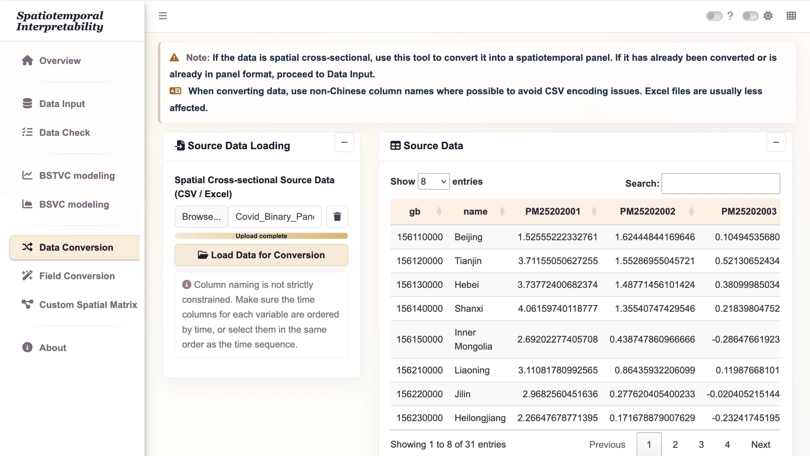
For each variable, select the start and end columns below, then choose Select by Range. Each selection must contain exactly 12 columns, ordered January to December. If columns are not contiguous, select them individually in that same order. The spelling and capitalization below match the supplied workbook.
| New variable name | Start column | End column |
|---|---|---|
| PM25 | PM25202001 | PM25202012 |
| Temp | Temp202001 | Temp202012 |
| NDVI | NDVI202001 | NDVI202012 |
| NTL | NTL202001 | NTL202012 |
| Total_In | Total_In202001 | Total_In202012 |
| Total_Out | Total_Out202001 | Total_Out202012 |
| covid | Covid_binary202001 | Covid_binary202012 |
- After configuring all seven variables, select Start Conversion.
- Confirm 372 rows (31 × 12), with columns
gb, Month, PM25, Temp, NDVI, NTL, Total_In, Total_Out, covid. - Download the converted table as CSV or Excel. Save it with a distinct name, such as
COVID-19-Converted-Panel.xlsx; preserve the original workbook.
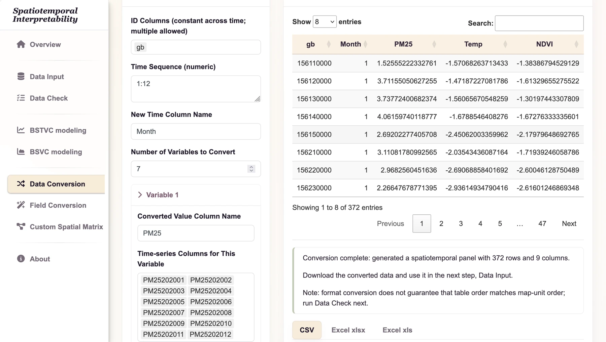
2. Import and validate
- Open Data Input and use the modeling table Browse control to select
COVID-19-Ready-Panel.csv (or your saved converted panel). - In the map Browse control, select the complete
China Provincial Mapshapefile component set. - Leave the custom matrix input empty for the default neighborhood.
- Select Load and Validate Input.
- Review Data Table field properties, types, missing-value ratios, and raw preview. Then review Map field properties and the boundary preview.
Inspect covid: its only non-missing values should be 0 and 1. Province names are human-readable labels, while gb is the matching key. The original workbook stores codes numerically and the map stores them as text, so inspect their types and normalize them consistently if the importer does not do so.
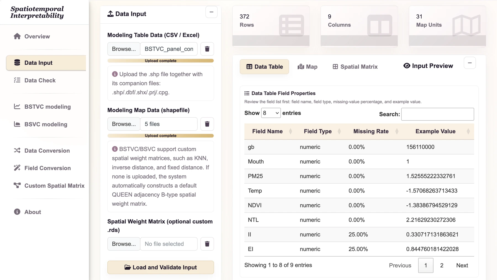
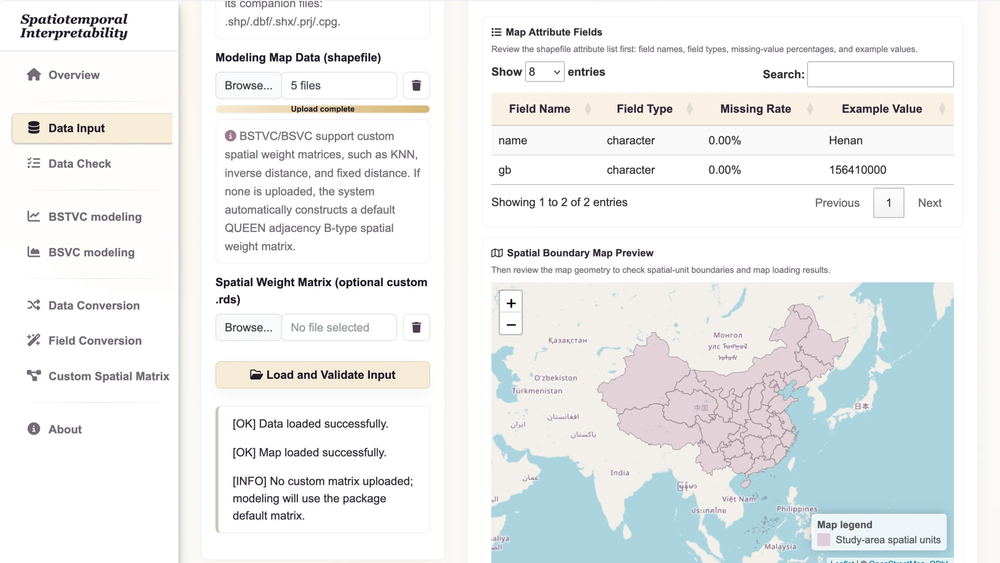
3. Check spatial order
- Open Data Check and select the BSTVC spatiotemporal panel check mode.
- Set Time Field to
Monthand Space Field togb. - Select Run Check and read the log. Confirm the full set of map identifiers has matched.
- If the application reports automatic rearrangement, export the checked table for your records and use Checked Data during modeling. If it reports an already aligned order, use Raw Data.
Expect 31 map units for each of 12 months. If any identifier fails to match, resolve the value or type mismatch before continuing. An alphabetically sorted province list is not the map’s internal order.
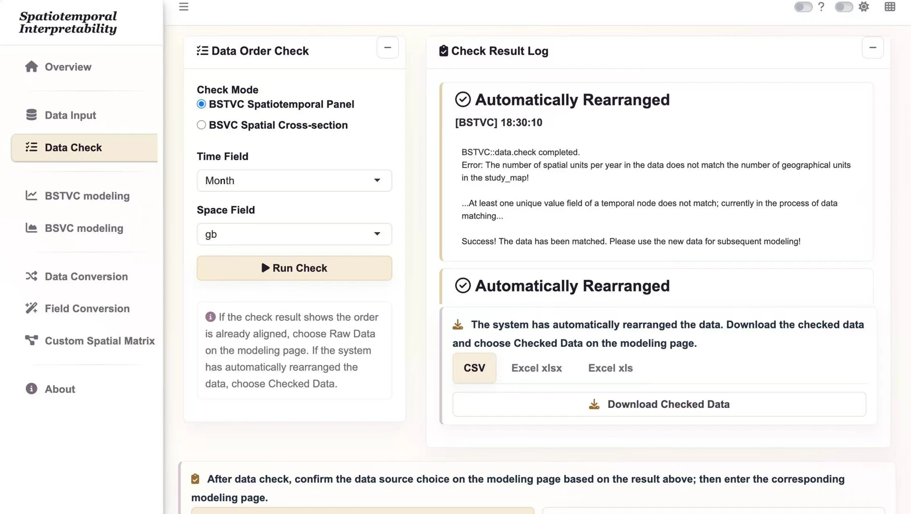
4. Configure and run the logistic model
| Parameter | Choose |
|---|---|
| Response Variable Y | covid |
| Explanatory Variables X | PM25, Temp, NDVI, NTL, Total_In, Total_Out |
| Response Type | Binary (logistic) |
| Time Field | Month |
| Space Field | gb |
| Data Source | Raw Data if already aligned; Checked Data if rearranged |
| Standardize X Variables | Yes for the demonstrated comparisons |
| Spatial weight matrix | Default QUEEN-B |
| Threads | 6 as the starting setting |
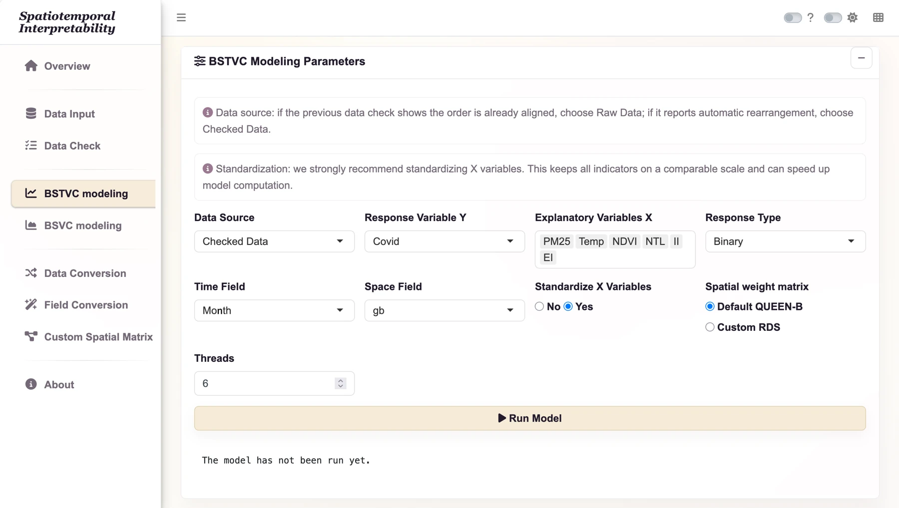
- Open BSTVC modeling and enter the settings listed above.
- Recheck the response family, time field, spatial field, and Data Source. Do not substitute IDs or time for explanatory variables.
- Select Run Model once and wait for the progress message to finish.
- When the result table appears, select Download All Tables. Save the workbook as
COVID-19_all_result.xlsxin your case output folder. - Keep the checked input table, map, chosen variables, neighborhood, thread setting, software version, and any error log with that workbook.
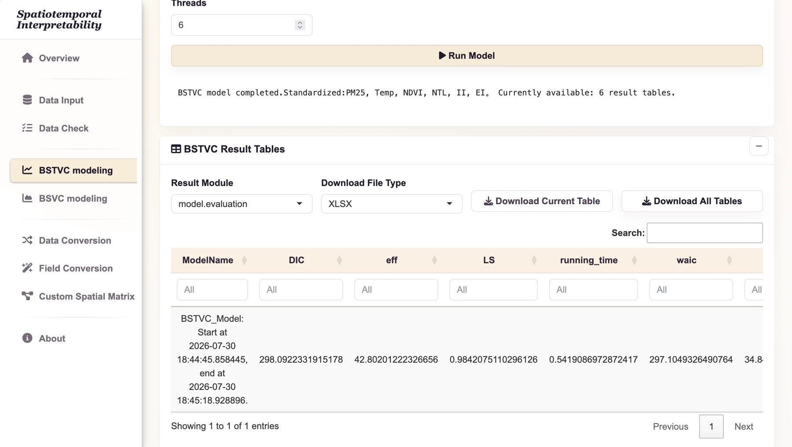
5. Interpret effects and relative contribution
The temporal and spatial coefficients are on the model’s log-odds scale. A positive coefficient indicates an association with higher modeled odds conditional on the specification; it is not an absolute increase in probability. Standardized predictors change the unit of coefficient interpretation.
STVPI can summarize relative factor contributions and their uncertainty. In the documented desktop version, logistic models lack the residual component needed for the overall model explainable percentage. Do not label a relative contribution chart as total explained outcome variation.
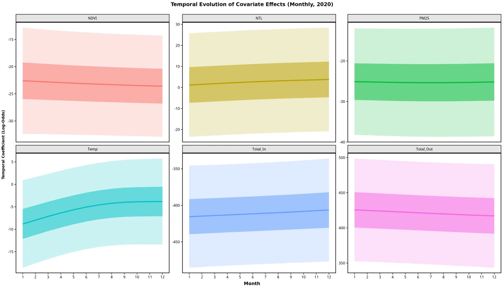
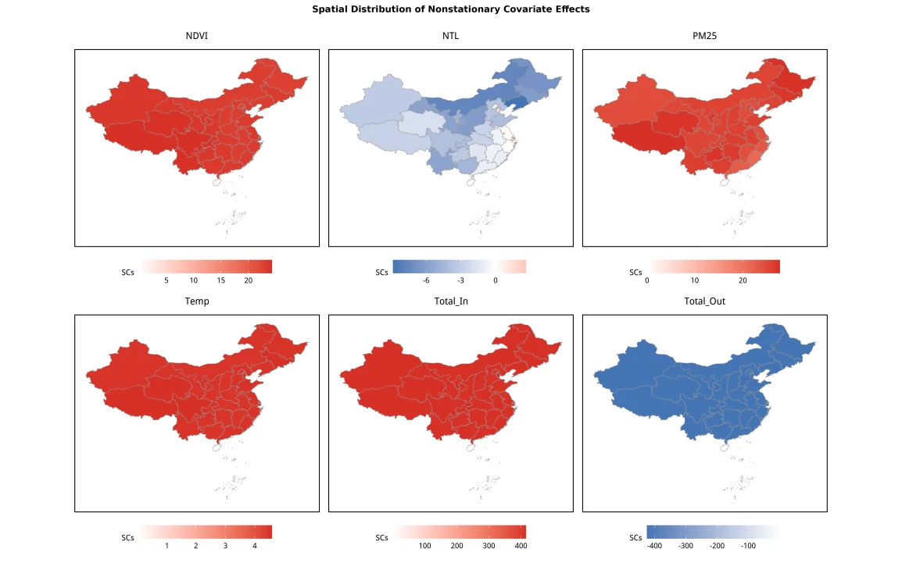
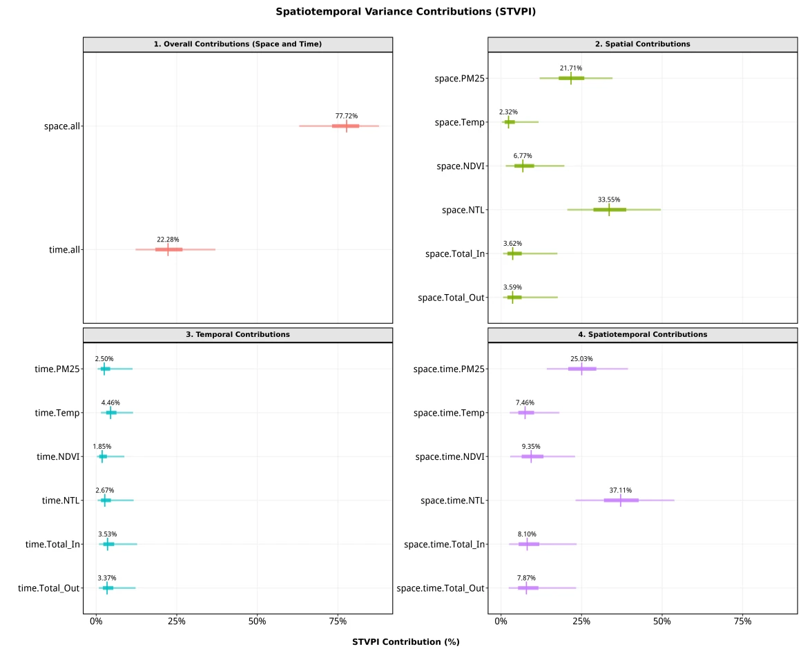
6. Examine probabilities and predictive discrimination
Read predict_y as a predicted probability and verify it lies between 0 and 1. Map probabilities using a common 0–1 scale across months. If a decision needs a yes/no label, state a justified threshold; do not assume a threshold was automatically validated by the model.
An ROC curve plots sensitivity against the false-positive rate over thresholds. AUC summarizes discrimination, but does not assess calibration and is not a causal result. The source figure below is a historical fitted-data illustration. For a prediction claim, use held-out data, exclude records with unavailable outcomes, and report how validation was designed.
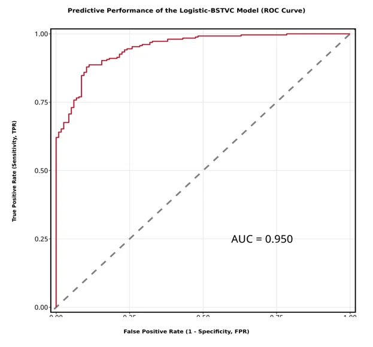
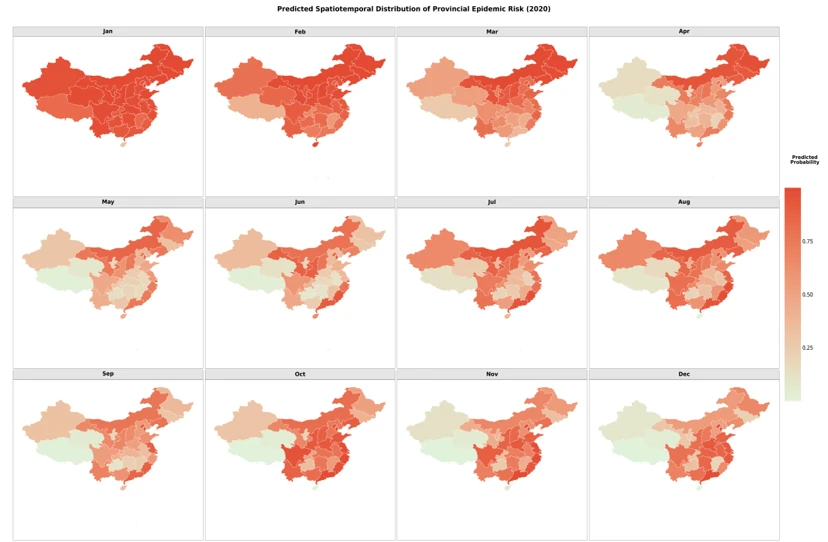
The R accuracy example fixes the positive class to 1 and the ROC direction, so the evaluation follows the stated event definition rather than choosing the direction from the data.
7. Save a reproducible record
Keep the original wide workbook, converted or ready panel, checked data, map components, settings, result workbook, and missingness notes together. Continue to Understand results and R visualization, or try the smaller count case.